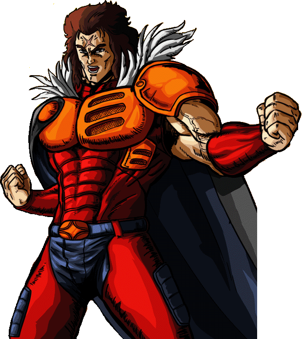

Diviso tra il retaggio di un legame fraterno perduto e la malvagità che ha infettato il suo spirito, Hyo combatte con la consapevolezza di chi è destinato alla tragedia. Maestro di tecniche letali, la sua presenza sul campo di battaglia è un presagio di sventura. Sotto la sua corazza batte il cuore di un guerriero che attende solo di trovare, finalmente, la pace.